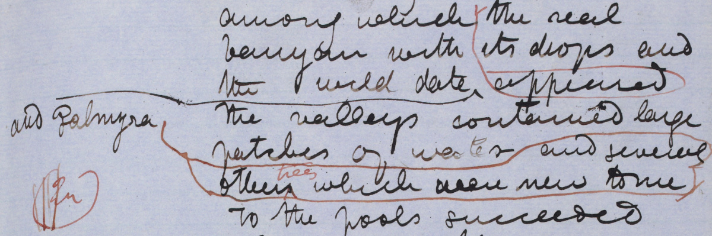
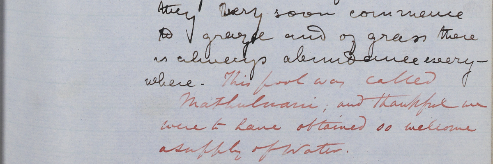
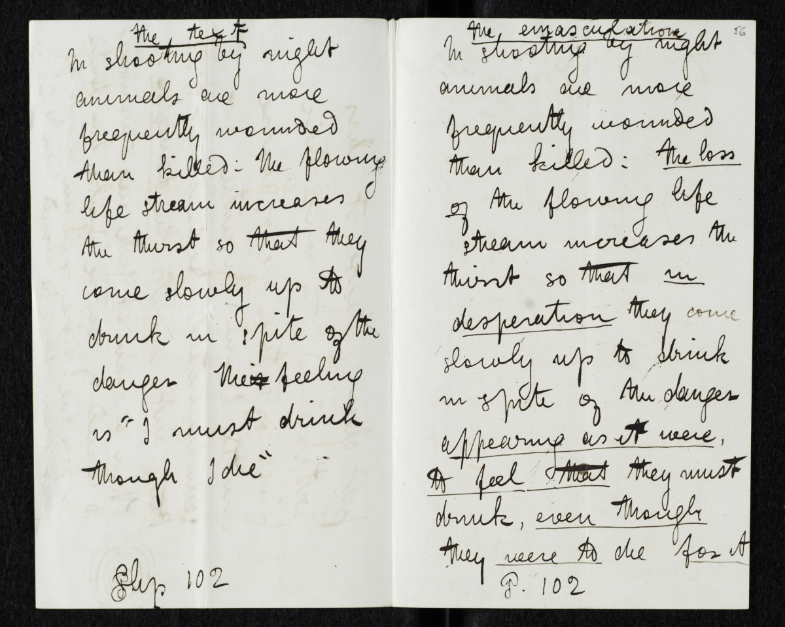
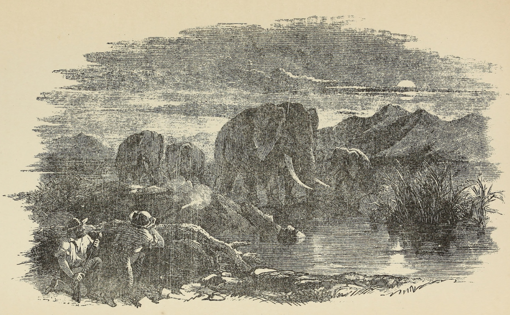
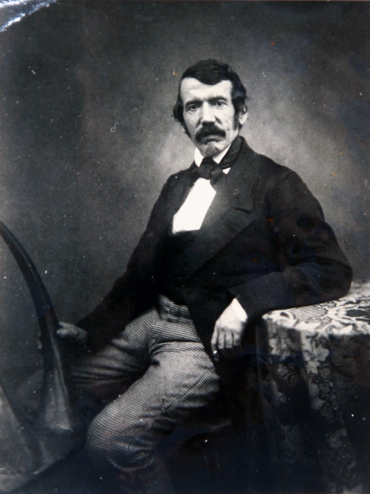
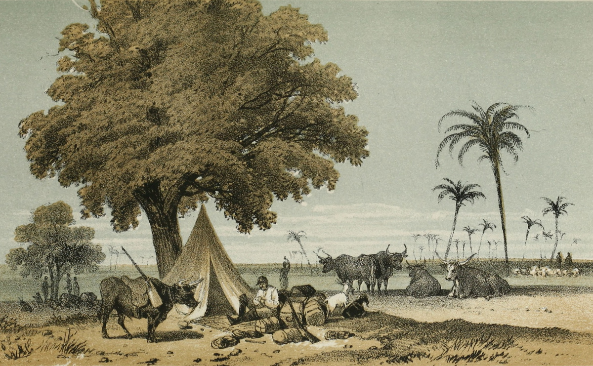
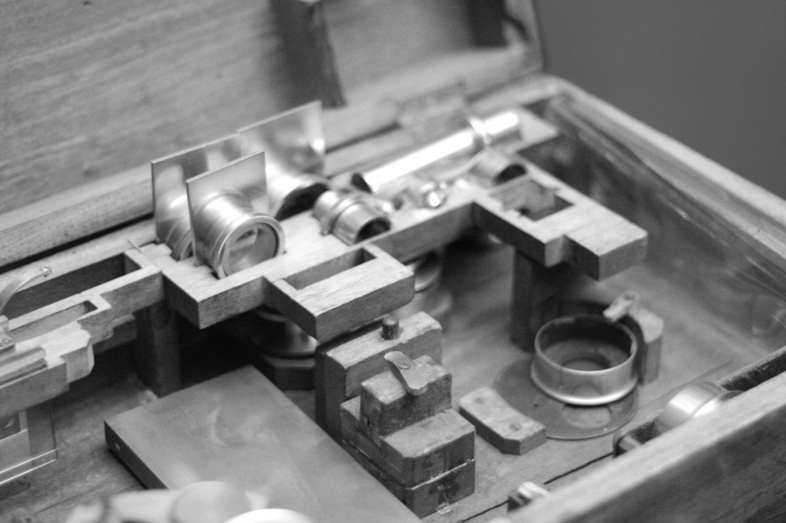
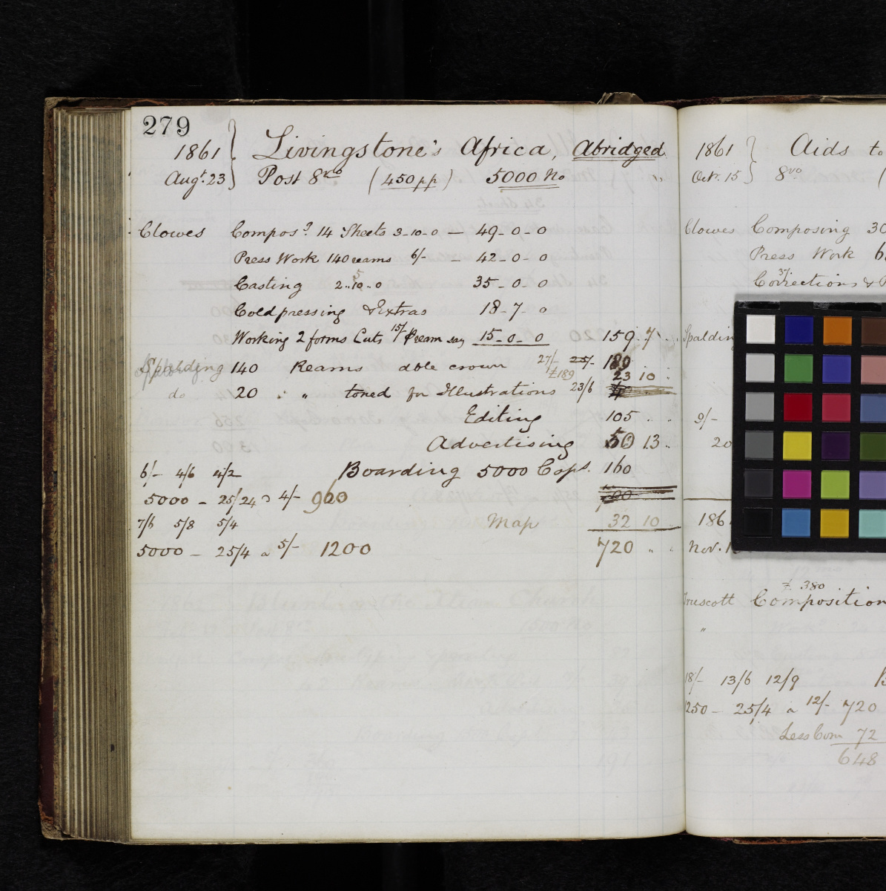
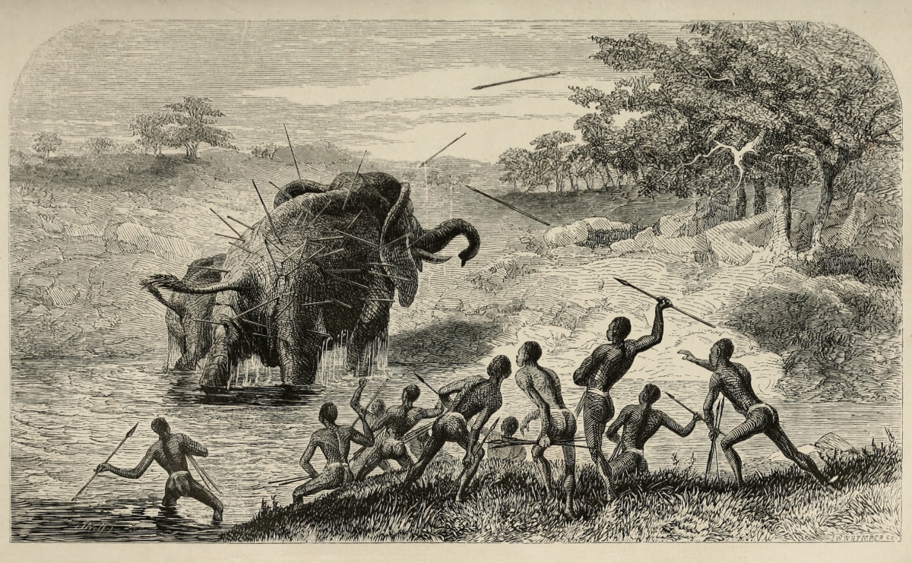
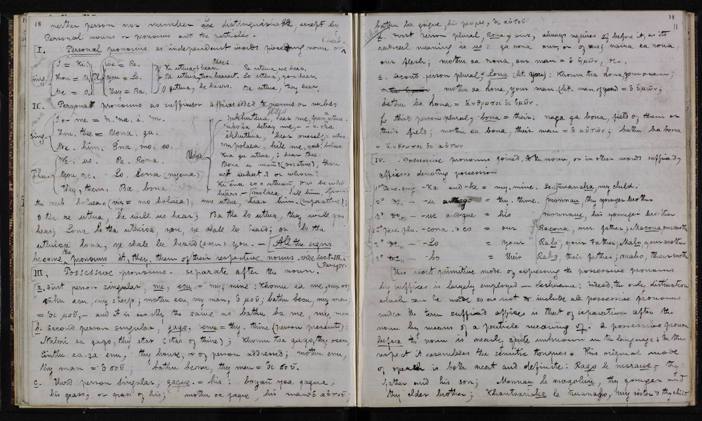

|
 |
(Left; top in mobile) E. George’s (late Gladding’s Shop), Whitechapel Road. (Right; bottom in mobile) Mr. Tregaskis’s Shop – ‘The Caxton Head’ – in Holborn. Illustrations from W. Roberts, The Book-Hunter in London: Historical and Other Studies of Collectors and Collecting (Chicago: A. C. McClurg & Co., 1895), 188, 205. Courtesy of the Internet Archive. These images of two London bookshops highlight the flourishing of the Victorian book trade, which expanded rapidly from the mid-nineteenth century as a result of new readership and cheaper, more efficient modes of production.


Images of two page segments from the Missionary Travels manuscript (Livingstone 1857cc:[38], 1857bb:[128]), detail in both cases. Copyright National Library of Scotland and Dr. Neil Imray Livingstone Wilson (as relevant). Creative Commons Share-alike 2.5 UK: Scotland. These segments are indicative of the editorial interventions that the “red ink man,” probably the reviser John Milton, made to Livingstone’s manuscript. In the top segment, the reviser queries the passage using the marginal annotation “Qu” and suggests two textual transpositions. In the bottom segment, Milton adds a sentence for the sake of closing clarity and expression.

Letter to John Murray III, 17 June 1857 (Livingstone 1857t:[10]-[11]). Copyright National Library of Scotland and Dr. Neil Imray Livingstone Wilson (as relevant). Creative Commons Share-alike 2.5 UK: Scotland. In this letter, Livingstone provides an example of what he considered to be illegitimate changes made by the literary reviser to the galley proofs of Missionary Travels. Livingstone’s original wording is on the left hand page under the title “The text,” while the editor’s version is on the right under the title “The emasculation.”

Elephant Shooting by Moonlight. Illustration from Roualeyn Gordon Cumming, Five Years’ Hunting in South Africa (London: Simpkin, Marshall & Co, 1892), opposite 284. Courtesy of the Internet Archive. The portion of text that Livingstone sent to his publisher as evidence of stylistic “emasculation” (see prior image) indicates that he was critical of “shooting by night” because it resulted in the needless wounding of animals. This practice, as seen in the above illustration, was taken up by Gordon Cumming, one of the most famous big-game hunters of the nineteenth century. Livingstone was critical of hunting for sport in general, as he noted in Missionary Travels. When hunters “[fire] away indiscriminately […] all for the sole purpose of making a ‘bag,’” Livingstone writes, “then I take it to be evident that such sportsmen are pretty far gone in the hunting form of insanity” (Livingstone 1857aa:161-62).

Photograph of David Livingstone, c.1840-65. Copyright University of Strathclyde Library, Department of Archives and Special Collections. For non-commercial research and private study. This image stages Livingstone as an exemplar of a Victorian masculinity. Although Livingstone criticised trophy hunting in his writings, the prominent rhinoceros horn in this photograph connects him with the characteristics that contemporaries associated with big-game hunting, including bravery, virility, and composure.

Camp in Ovampo Land. Illustration from Francis Galton, The Narrative of an Explorer in Tropical South Africa (London: John Murray, 1853), opposite 210. Francis Galton travelled in southern Africa between 1850 and 1852. He received a gold medal from the Royal Geographical Society on the publication of his travelogue and subsequently wrote an influential expeditionary handbook, The Art of Travel (1855). The illustration above foregrounds Galton’s competence in African travel by showcasing his equipment and the layout of his encampment. Due to this competence, Livingstone first considered Galton as a reviser for Missionary Travels before finally settling on and securing Norton Shaw.

Livingstone's microscope case, detail, c.1850. Copyright Livingstone Online. May not be reproduced without the express written consent of the National Trust for Scotland, on behalf of the Scottish National Memorial to David Livingstone Trust. Livingstone travelled with a complement of scientific instruments, including this microscope. He was a keen field scientist and gathered environmental data from the regions through which he travelled. He also collected zoological, botanical, and geological specimens that he sent to British metropolitan institutions. Livingstone’s publishing correspondence, such as his letters to Joseph Hooker (1857y, 1857z), underscore his efforts to avoid scientific error in Missionary Travels while demonstrating his credentials in natural history.

Image of a page from John Murray’s Estimate Book: Expected Costs of Publishing Livingstone’s Africa, Abridged (Murray 1850-1866:[1]). Copyright National Library of Scotland. Creative Commons Share-alike 2.5 UK: Scotland. Missionary Travels sold well enough to warrant the publication of an abridged version of the text for a wider readership in 1861. This page itemises John Murray’s projected costs for producing, editing, and advertising the popular edition.

Female elephant pursued with javelins, protecting her young. Illustration from Missionary Travels (Livingstone 1857aa:opposite 562). Courtesy of the Internet Archive. When Livingstone received the proofs of this illustration, he complained to John Murray that it portrayed the members of his retinue “all stark naked.” “Is it impossible,” he wrote, “to put on a rag round the lions [sic] of these fellows? All wear something except the Batoka.” Livingstone’s comment shows a striking awareness of the tendency in contemporary travel texts to exoticise African bodies as well as his, Livingstone's, own efforts to oppose stereotypical representations. It is likely that this illustration, in which each subject is wearing a small garment, is an amended version of the plate.

Manuscript pages from Analysis of the Language of the Bechuanas (Livingstone 1858:[21]-[22]). Copyright National Library of Scotland and Dr. Neil Imray Livingstone Wilson (as relevant). Creative Commons Share-alike 2.5 UK: Scotland. Livingstone’s SeTswana “grammar” was one of the earliest attempts at a systematic study of the language. Although Livingstone considered including the work as an appendix to Missionary Travels, it was instead printed in small numbers for private circulation. The pages shown here are devoted to discussion of SeTswana personal and possessive pronouns.